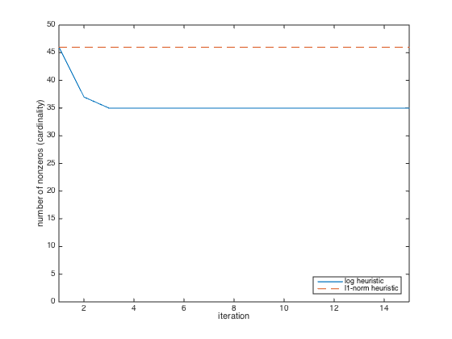

% Section 6.2, Boyd & Vandenberghe "Convex Optimization" % "Just relax: Convex programming methods for subset selection % and sparse approximation" by J. A. Tropp % Written for CVX by Almir Mutapcic - 02/28/06 % % We consider a set of linear inequalities A*x <= b which are % feasible. We apply two heuristics to find a sparse point x that % satisfies these inequalities. % % The (standard) l1-norm heuristic for finding a sparse solution is: % % minimize ||x||_1 % s.t. Ax <= b % % The log-based heuristic is an iterative method for finding % a sparse solution, by finding a local optimal point for the problem: % % minimize sum(log( delta + |x_i| )) % s.t. Ax <= b % % where delta is a small threshold value (determines what is close to zero). % We cannot solve this problem since it is a minimization of a concave % function and thus it is not a convex problem. However, we can apply % a heuristic in which we linearize the objective, solve, and re-iterate. % This becomes a weighted l1-norm heuristic: % % minimize sum( W_i * |x_i| ) % s.t. Ax <= b % % which in each iteration re-adjusts the weights W_i based on the rule: % % W_i = 1/(delta + |x_i|), where delta is a small threshold value % % This algorithm is described in papers: % "An Affine Scaling Methodology for Best Basis Selection" % by B. D. Rao and K. Kreutz-Delgado % "Portfolio optimization with linear and �xed transaction costs" % by M. S. Lobo, M. Fazel, and S. Boyd % fix random number generator so we can repeat the experiment seed = 0; randn('state',seed); rand('state',seed); % the threshold value below which we consider an element to be zero delta = 1e-8; % problem dimensions (m inequalities in n-dimensional space) m = 100; n = 50; % construct a feasible set of inequalities % (this system is feasible for the x0 point) A = randn(m,n); x0 = randn(n,1); b = A*x0 + rand(m,1); % l1-norm heuristic for finding a sparse solution fprintf(1, 'Finding a sparse feasible point using l1-norm heuristic ...') cvx_begin variable x_l1(n) minimize( norm( x_l1, 1 ) ) subject to A*x_l1 <= b; cvx_end % number of nonzero elements in the solution (its cardinality or diversity) nnz = length(find( abs(x_l1) > delta )); fprintf(1,['\nFound a feasible x in R^%d that has %d nonzeros ' ... 'using the l1-norm heuristic.\n'],n,nnz); % iterative log heuristic NUM_RUNS = 15; nnzs = []; W = ones(n,1); % initial weights disp([char(10) 'Log-based heuristic:']); for k = 1:NUM_RUNS cvx_begin quiet variable x_log(n) minimize( sum( W.*abs(x_log) ) ) subject to A*x_log <= b; cvx_end % display new number of nonzeros in the solution vector nnz = length(find( abs(x_log) > delta )); nnzs = [nnzs nnz]; fprintf(1,' found a solution with %d nonzeros...\n', nnz); % adjust the weights and re-iterate W = 1./(delta + abs(x_log)); end % number of nonzero elements in the solution (its cardinality or diversity) nnz = length(find( abs(x_log) > delta )); fprintf(1,['\nFound a feasible x in R^%d that has %d nonzeros ' ... 'using the log heuristic.\n'],n,nnz); % plot number of nonzeros versus iteration plot(1:NUM_RUNS, nnzs, [1 NUM_RUNS],[nnzs(1) nnzs(1)],'--'); axis([1 NUM_RUNS 0 n]) xlabel('iteration'), ylabel('number of nonzeros (cardinality)'); legend('log heuristic','l1-norm heuristic','Location','SouthEast')
Finding a sparse feasible point using l1-norm heuristic ...
Calling SDPT3 4.0: 200 variables, 100 equality constraints
------------------------------------------------------------
num. of constraints = 100
dim. of socp var = 100, num. of socp blk = 50
dim. of linear var = 100
*******************************************************************
SDPT3: Infeasible path-following algorithms
*******************************************************************
version predcorr gam expon scale_data
NT 1 0.000 1 0
it pstep dstep pinfeas dinfeas gap prim-obj dual-obj cputime
-------------------------------------------------------------------
0|0.000|0.000|1.5e+01|1.5e+01|1.3e+05| 2.306427e+02 0.000000e+00| 0:0:00| chol 1 1
1|0.607|0.203|5.7e+00|1.2e+01|9.6e+04| 2.372055e+03 -7.798589e+01| 0:0:00| chol 1 1
2|0.527|0.755|2.7e+00|3.0e+00|4.4e+04| 2.913698e+03 -4.649185e+02| 0:0:00| chol 1 1
3|0.783|1.000|5.9e-01|2.7e-02|1.1e+04| 2.265689e+03 -7.312838e+02| 0:0:00| chol 1 1
4|0.933|1.000|3.9e-02|8.1e-03|1.2e+03| 1.752965e+02 -6.105356e+02| 0:0:00| chol 1 1
5|1.000|0.960|7.9e-07|8.9e-03|2.8e+02| 1.050573e+02 -1.760406e+02| 0:0:00| chol 1 1
6|0.842|0.872|3.2e-07|1.2e-03|5.3e+01| 5.663446e+01 3.546144e+00| 0:0:00| chol 1 1
7|0.590|0.753|1.4e-07|3.1e-04|3.3e+01| 4.833162e+01 1.570252e+01| 0:0:00| chol 1 1
8|0.864|0.581|2.2e-08|1.3e-04|1.9e+01| 4.206510e+01 2.318715e+01| 0:0:00| chol 1 1
9|1.000|0.553|1.2e-09|5.8e-05|1.1e+01| 3.937001e+01 2.867040e+01| 0:0:00| chol 1 1
10|1.000|0.851|9.8e-14|8.6e-06|3.9e+00| 3.750190e+01 3.356489e+01| 0:0:00| chol 1 1
11|0.857|0.651|2.1e-14|3.0e-06|2.2e+00| 3.675586e+01 3.455323e+01| 0:0:00| chol 1 1
12|0.885|1.000|5.3e-14|8.2e-11|1.1e+00| 3.647209e+01 3.541597e+01| 0:0:00| chol 1 1
13|1.000|0.971|2.8e-14|1.1e-11|2.2e-01| 3.604244e+01 3.581861e+01| 0:0:00| chol 1 1
14|1.000|0.667|1.3e-12|5.3e-12|9.5e-02| 3.597437e+01 3.587946e+01| 0:0:00| chol 1 1
15|0.965|0.928|1.5e-12|1.5e-12|1.7e-02| 3.594769e+01 3.593091e+01| 0:0:00| chol 1 1
16|0.873|1.000|1.4e-12|1.0e-12|5.3e-03| 3.594352e+01 3.593821e+01| 0:0:00| chol 1 2
17|0.920|0.980|1.7e-12|1.0e-12|5.9e-04| 3.594114e+01 3.594055e+01| 0:0:00| chol 2 2
18|1.000|0.977|8.1e-12|1.0e-12|5.9e-05| 3.594080e+01 3.594074e+01| 0:0:00| chol 2 2
19|0.996|0.998|2.0e-12|1.5e-12|9.1e-07| 3.594078e+01 3.594078e+01| 0:0:00|
stop: max(relative gap, infeasibilities) < 1.49e-08
-------------------------------------------------------------------
number of iterations = 19
primal objective value = 3.59407774e+01
dual objective value = 3.59407765e+01
gap := trace(XZ) = 9.08e-07
relative gap = 1.25e-08
actual relative gap = 1.25e-08
rel. primal infeas (scaled problem) = 2.01e-12
rel. dual " " " = 1.50e-12
rel. primal infeas (unscaled problem) = 0.00e+00
rel. dual " " " = 0.00e+00
norm(X), norm(y), norm(Z) = 1.7e+01, 1.6e+00, 9.9e+00
norm(A), norm(b), norm(C) = 7.3e+01, 8.9e+01, 8.1e+00
Total CPU time (secs) = 0.29
CPU time per iteration = 0.02
termination code = 0
DIMACS: 6.9e-12 0.0e+00 6.1e-12 0.0e+00 1.2e-08 1.2e-08
-------------------------------------------------------------------
------------------------------------------------------------
Status: Solved
Optimal value (cvx_optval): +35.9408
Found a feasible x in R^50 that has 46 nonzeros using the l1-norm heuristic.
Log-based heuristic:
found a solution with 46 nonzeros...
found a solution with 37 nonzeros...
found a solution with 35 nonzeros...
found a solution with 35 nonzeros...
found a solution with 35 nonzeros...
found a solution with 35 nonzeros...
found a solution with 35 nonzeros...
found a solution with 35 nonzeros...
found a solution with 35 nonzeros...
found a solution with 35 nonzeros...
found a solution with 35 nonzeros...
found a solution with 35 nonzeros...
found a solution with 35 nonzeros...
found a solution with 35 nonzeros...
found a solution with 35 nonzeros...
Found a feasible x in R^50 that has 35 nonzeros using the log heuristic.
